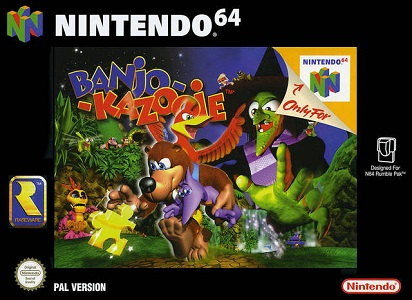

PERDU...

Banjo-Kazooie est un jeu de plates-formes en 3D développé par Rare et édité par Nintendo en 1998 sur Nintendo 64.
Banjo-Kazooie est un succès critique et commercial: il s'est écoulé à plus de 1,8 million de copies aux États-Unis.
Dans ce jeu, Banjo et Kazooie doivent sauver la belle Tooty de la moche sorcière Gruntilda